Android Auto sur le tableau de bord de ta moto, sans fil
Google Maps, Waze, Spotify et l’Assistant sur l’écran de la moto, qui se connecte tout seul au démarrage. Et en plus : le carburant le moins cher à proximité, tes trajets avec records, des vidéos avec ta vitesse incrustée et une app pour la montre.
Gratuite · sans pub · open source · Android 10 ou plus récent
Téléchargement direct de la dernière version · aussi sur GitHub · nouveautés de la v2.4

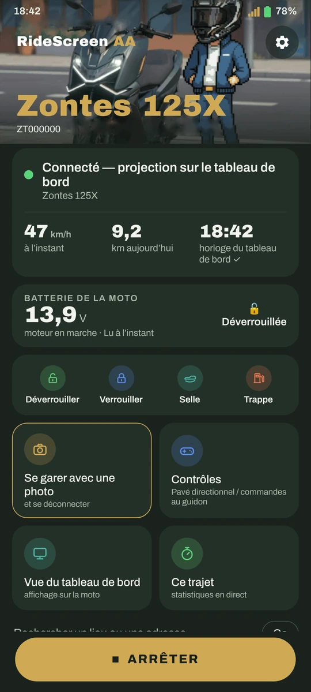
Est-ce que ça marche avec ma moto ?
Si ton tableau de bord affiche un code QR pour connecter le téléphone (MotoPlay / EasyConnect), c’est presque sûr que oui. L’app est testée tous les jours sur une Zontes 125X et repose sur OpenCfMoto, qui fonctionne avec beaucoup de marques utilisant le même tableau de bord.


Nouveautés de la v2.4
La clé dans le téléphone, un tableau de bord avec tes données sur l’écran de la moto et dix langues. Gratuit, comme toujours.
La clé, dans le téléphone
Déverrouille, verrouille et ouvre la selle ou la trappe à carburant depuis l’app, toujours avec confirmation ; ensuite, elle vérifie l’état de la moto. Jamais quand la moto roule. Widget « Commandes de la moto », déverrouillage à la connexion (facultatif), le verrouillage termine le trajet (facultatif), et le McuID se lit avec la caméra depuis le QR du tableau de bord.
Nouveau dans la 2.4Lecteur OBD
Avec un adaptateur Bluetooth ELM327, en lecture seule : données disponibles, codes défaut et, en direct, régime, vitesse, température et accélérateur. Et lecture continue pendant la projection : « moteur en marche » vient maintenant du vrai régime.
Nouveau dans la 2.4Dashboard sur le tableau de bord
À la place d’Android Auto, tes données sur le tableau de bord : styles Sport, Racing et Touring, de jour et de nuit. Adapté à l’écran de la 125X, et l’aperçu est exactement ce que tu verras sur la moto. L’échelle des cadrans s’adapte à ta moto. Sans OBD, la vitesse vient du GPS.
Nouveau dans la 2.4Trajets avec données OBD
Relecture et vidéo du trajet avec accélérateur et régime, et fusion de trajets (annulable).
Nouveau dans la 2.4Sur le tableau de bord et au stationnement
Un accueil au début de la projection, un au revoir avec le résumé de la journée, et une alerte pluie au stationnement pour les prochaines heures là où tu as laissé la moto.
Nouveau dans la 2.4Volume avec intercom
Avec « Les boutons du guidon pilotent Android Auto », tu peux maintenant garder ▲/▼ pour le volume.
Nouveau dans la 2.4Pouls de la montre
Le pouls de ta montre dans l’app (❓ Aide), toutes les 5 secondes. Et l’app de la montre, traduite dans toutes les langues.
Nouveau dans la 2.4Dix langues
L’app et la montre, entièrement en espagnol, catalan, anglais, italien, français, allemand, portugais, grec, russe et thaï.
Nouveau dans la 2.4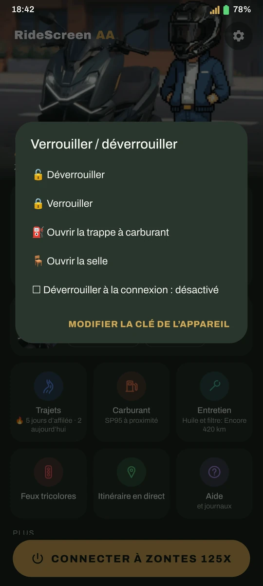
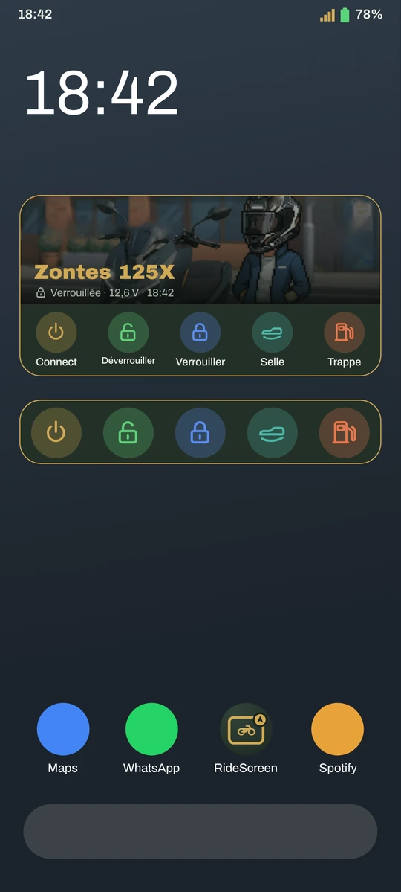
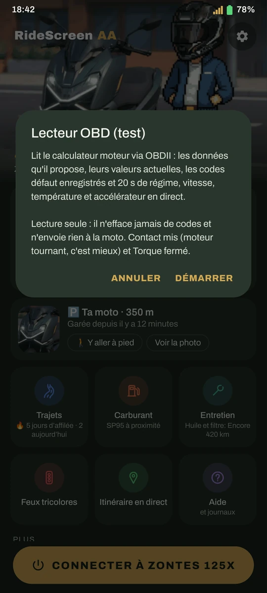
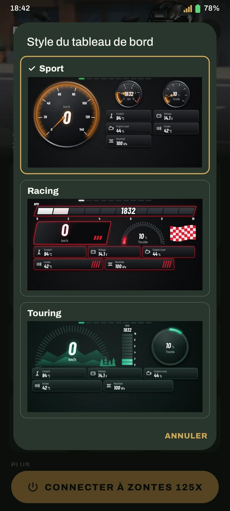
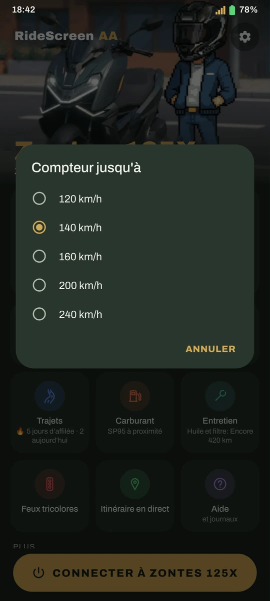
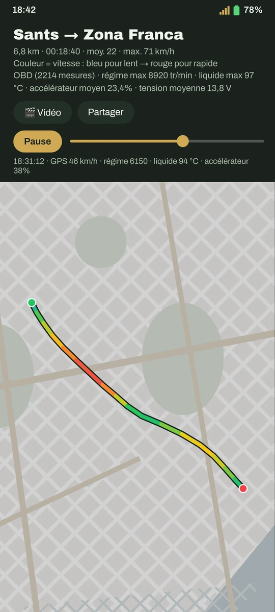
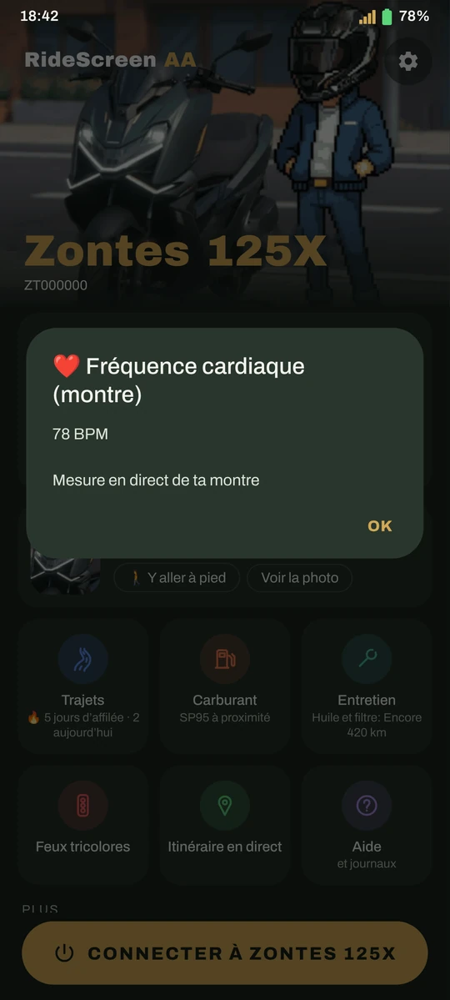
❤️ Merci
Remerciements particuliers pour la 2.4 :
- Melo, pour le prêt de l'iPhone pour les tests iOS
- Inky en Moto — pour les journaux qui ont fait marcher la T350X et sa vidéo sur l'app (youtube.com/@inkyenmoto)
- Luis Gil, pour son aide avec le lecteur OBD
- Toutes les personnes qui ont testé les versions de test de la 2.4
Merci aux personnes qui soutiennent le projet sur Ko-fi !
- Francisco Javier S.
- José Antonio R.
- Raul
- Luis Gil
- INKY
- Juanma M.
- Alfonsomicra
- Isra
- Dionisios S.
- José Manuel
- Karsten
- Francesc Xavier M.
- Jon
- Alberto
- Personnes anonymes
Bien plus qu’Android Auto
Se connecte toute seule
Tu démarres la moto et Android Auto apparaît sur le tableau de bord, le téléphone dans la poche.
Une image sur mesure
Ajuste l’image à ton tableau de bord avec des flèches, en voyant le résultat en direct sur la moto.
"Ok Google"
Parle à l’Assistant depuis ton intercom, ta montre ou tes lunettes.
Le carburant le moins cher
Prix officiel du SP95 près de toi, et Maps t’y emmène. En Espagne uniquement.
Tes trajets
Chaque sortie est enregistrée toute seule : tracé par vitesse, carte de chaleur, records et trophées.
Vidéo du trajet
Assemble tes clips (Ray-Ban Meta, caméra embarquée, téléphone) avec la carte, la vitesse et l’heure incrustées.
Tes feux rouges
Où tu t’arrêtes le plus, combien de temps tu attends et quel chemin est vraiment le plus rapide.
Où je me suis garé
Enregistre l’emplacement et une photo ; la boussole de la montre te ramène à la moto.
Entretien
Huile, courroie, contrôle technique… avec un rappel au bon moment, et ta consommation réelle.
Détection de chute
Alarme sur le téléphone et la montre et, si tu ne réponds pas, un SMS avec ta position.
ExpérimentalLa clé, dans le téléphone
Déverrouille, verrouille et ouvre la selle ou la trappe à carburant depuis l’app, toujours avec confirmation .
Nouveau dans la 2.4Widget « Connecter »
Un appui sur l’écran d’accueil et la connexion à ta moto se lance, avec la photo de ton Garage.
Nouveau dans la 2.3Mode passager
Ton passager choisit la destination et la musique et pilote Android Auto depuis son téléphone.
Nouveau dans la 2.3Trajets à l’abri
Ton trajet est enregistré toutes les 30 s, même si l’app se ferme. Et tu peux importer des itinéraires GPX.
Nouveau dans la 2.3À quoi ça ressemble
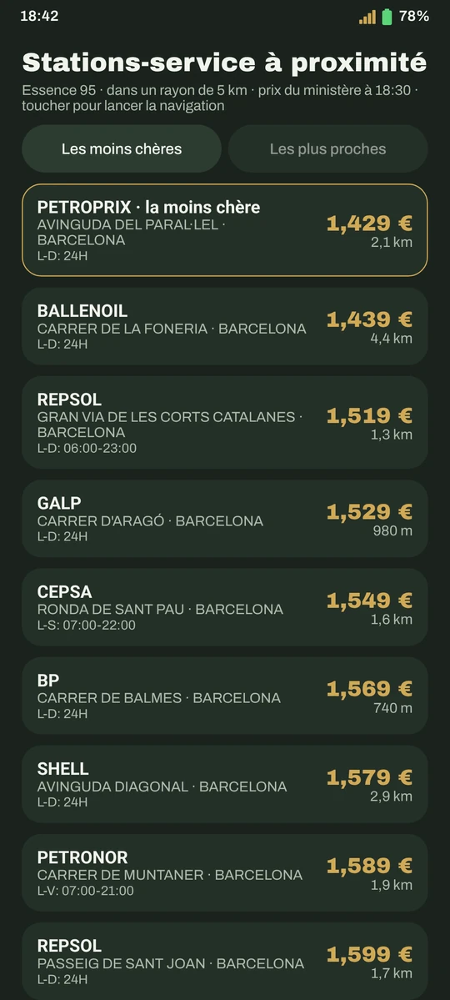
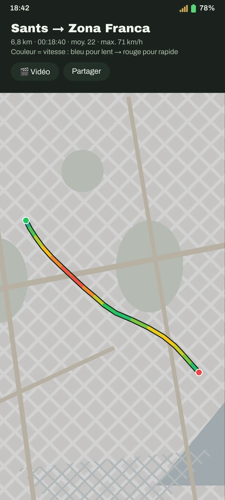
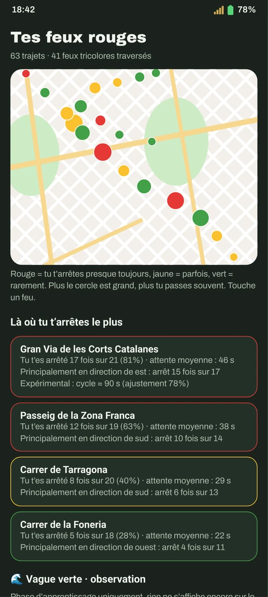
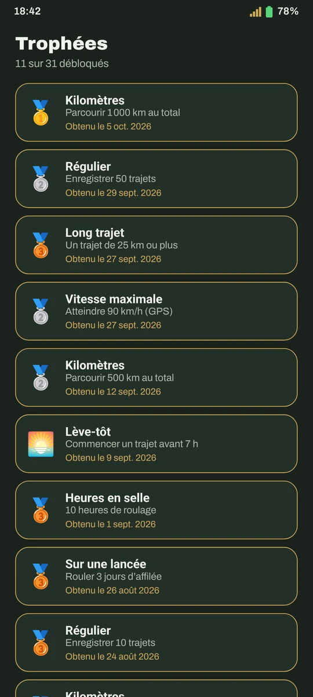
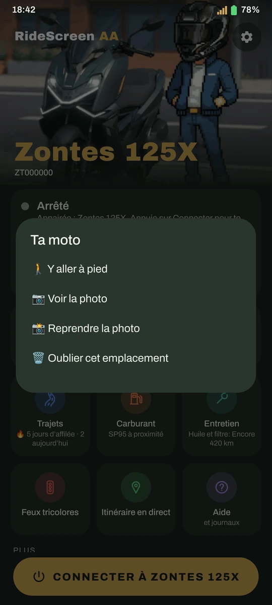
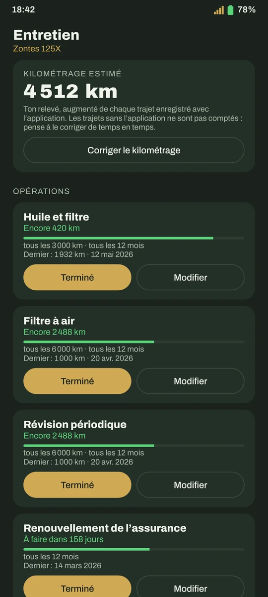
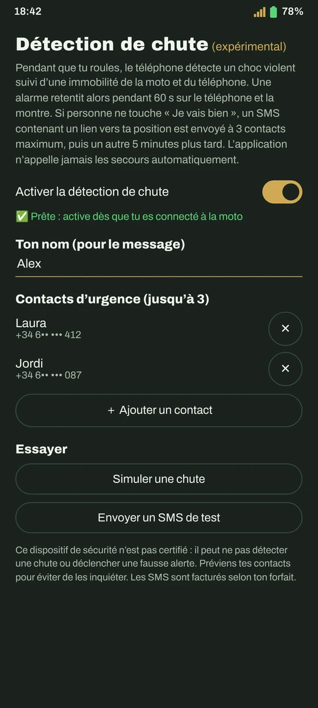

Ajustement de l’image, en direct sur le tableau de bord
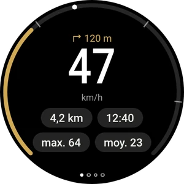
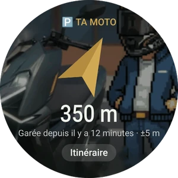
App pour montres Wear OS · guide de la montre
Prête en 10 minutes
Télécharge l’APK
Avec le bouton ci-dessus, en direct (ou depuis GitHub). Les versions suivantes, c’est l’app qui te les propose.
Prépare Android Auto
Un réglage unique dans Android Auto. Le guide te le montre avec des captures.
Scanne le QR du tableau de bord
Et appuie sur Connecter. Ensuite, elle se connecte toute seule quand tu démarres la moto.
Questions fréquentes
C’est une app officielle Zontes ?
Non. C’est un projet indépendant, fait par un motard pour sa propre Zontes et partagé avec la communauté. Il n’est affilié ni à Zontes, ni à CFMoto, ni à Carbit, ni à Google.
Combien ça coûte ?
Rien. Elle est gratuite, sans pub ni abonnement, et le code est ouvert (licence AGPL-3.0). Si elle t’est utile, tu peux m’offrir un café.
Pourquoi elle n’est pas sur Google Play ?
Ça arrive. En attendant, elle se télécharge depuis ce site ; si Play Protect affiche un avertissement, c’est qu’il ne connaît pas encore l’app : Plus d’infos → Installer quand même.
Et mes données ?
Tes trajets, photos et réglages restent sur ton téléphone : pas de compte, pas de cloud. L’app n’envoie que des rapports d’erreur anonymes (rien qui t’identifie) pour pouvoir les corriger, et tu peux les désactiver.
Il me faut des données mobiles ?
Pour les cartes, la musique en streaming et les prix du carburant, oui, comme Android Auto en voiture. La liaison avec la moto passe par son propre Wi‑Fi.
Quelque chose ne marche pas, que faire ?
Consulte le guide, qui couvre les erreurs les plus fréquentes. Si ça continue, dans l’app : ❓ Aide → Partager les journaux, et envoie-le en expliquant ce qui s’est passé.